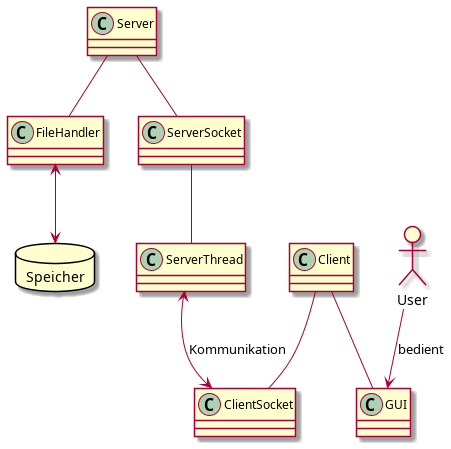

1. Projekt-Beschreibung
Zentral verwaltete multi User To-Do Liste
2. Features und Anforderungen
- Zentrale Verwaltung der To-Do Einträge
- Abfrage und Anzeige des Erledigungsstatus und Datum
- Liste ist von mehreren Benutzern les- und bearbeitbar
- To Dos werden Serverseitig in einer Speicherdatei verwaltet
- Von Client aufbereitete Benutzereingabe so dass diese vom Server weiterverarbeitet werden kann (Eingabefehler werden bereits von Client verarbeitet)
- GUI Client:
Liste (mit Datum und To-Do Eintrag)
Button Erledigt
Button zum Hinzufügen von neuen To-Do´s
Eingabemaske für neue To-Dos
- Systemumgebungen der Komponenten
Client: Windows
Server: Linux
3. Architektur
Vorschlag Use Case:. 
4. Aufwandsschätzung und Aufteilung
Ohnmacht, Rumpel Schlatter
Einarbeitungszeiten:
- TCP/IP Socket programmierung: 8h
- MultiThreading: 8h
- SQL Datenbank programmierung: 8h
Implementierung:
- DataBaseHandler: 4h
- Parser: 2h
- ServerSocket: 3h
- ServerThread 3h
- DateiHandler: 2h
JavaDoc: 10h
Testen: 2h
Dokumentation: 2h
Aberle, Bechtel:
- JavaDoc
- Handbuch
- Präsentation
Flaiz:
- Client
- GUI
Einarbeitungszeiten:
- GUI Programmierung: 10h
- Einarbeitung Server/Cleint Kommunikation: 5h
- Client Programmierung: 10h
Implementierung:
- GUI Aufbau: 10h
- Client schreiben: 10h
- Testen: 5h
- Dokumentation 2h
- Testen + Debuggen: 10h
5. UML